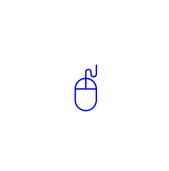

Life Beyond Thinking 🌳
2019Life Beyond Thinking® est construit sur une expérience pratique et vécue et relie la science, la philosophie et la spiritualité en une approche unique et unifiée. Cette méthode simple et facile à utiliser met fin à nos souffrances inutiles, nous sort du pétrin et nous plonge dans nos rêves. Obtenez des informations approfondies sur la façon dont votre esprit contrôle toute votre vie. Transformez les batailles intérieures de votre esprit en une compréhension, une clarté et un objectif plus grands.
